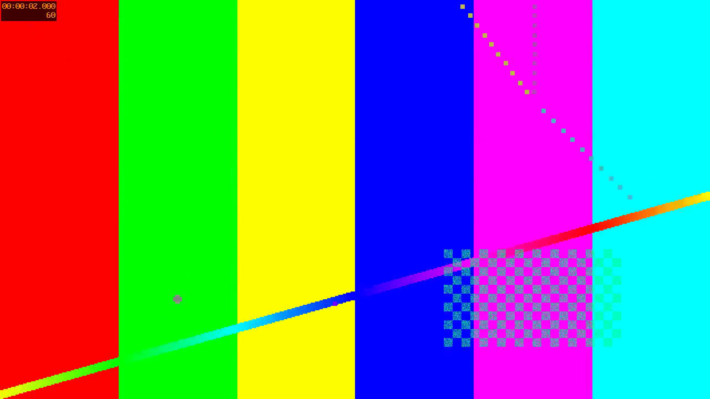
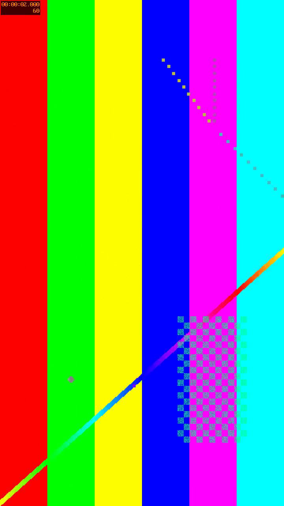

VIDEO REVIEW REPORT
示例项目
视频复盘报告
视频文件
example.mp4
报告记录
2 条
视频规格
1280 × 720 · 00:00:10
生成时间
2026-08-12
示例项目
报告概览
概览与目录
2
记录总数
2
画面记录
0
文字记录
1
高重要记录
01
关键区域与行动路线
00:00:02
3
02
竖版画面布局检查
00:00:04
4
示例项目
记录 01
REVIEW NOTE 01
关键区域与行动路线
00:00:02
演示
重要程度：高

原始画面
标注画面
复盘说明
脚本生成的测试画面，用于演示横版图片在 A4 页面中的适配方式。
示例项目
记录 02
REVIEW NOTE 02
竖版画面布局检查
00:00:04
布局
重要程度：中

竖版标注画面
复盘说明
竖版截图限制在页面内容区内，不会拉长页面或破坏分页。